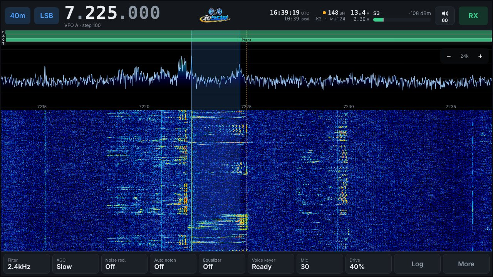
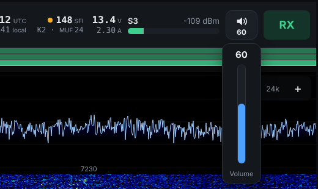
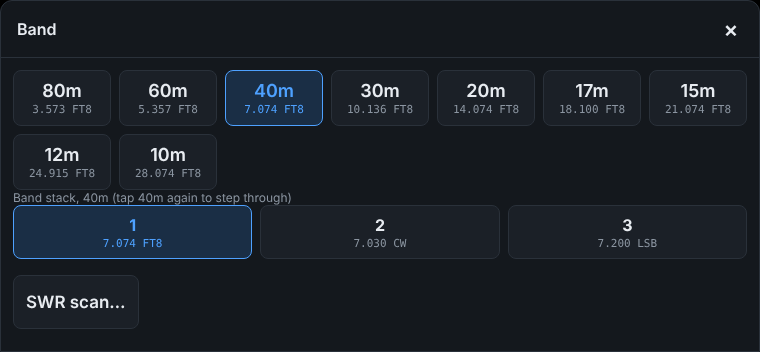
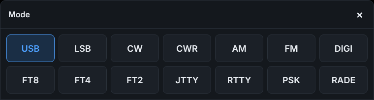
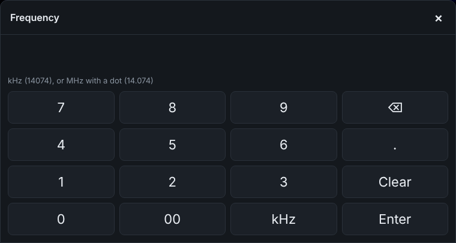
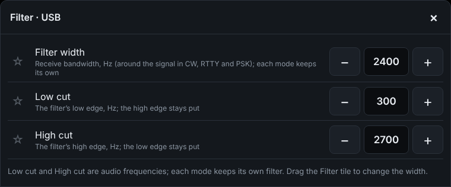
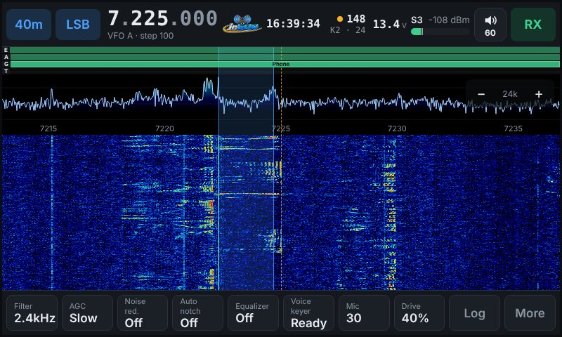
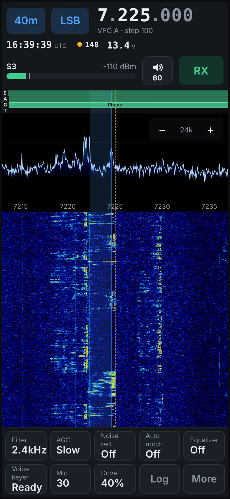

The main screen#
The same screen works on the radio's 800×480 touchscreen, a desktop browser and a phone; the layout adapts to the size.

Header#
From left to right:
| Item | What it does |
|---|---|
Band (40m) | opens the band sheet: nine bands with three band-stacking registers each |
Mode (LSB) | opens the mode sheet: USB, LSB, CW, CWR, AM, FM, DIGI, FT8, FT4, FT2, JTTY, RTTY, PSK, RADE |
| Frequency | tap it for a keypad; scroll the mouse wheel over a digit to change that digit. The line under it shows the VFO, the tuning step, RIT and locks |
| jeSDR logo | tap it to open jeSDR.com in a new window (on the radio's own screen it asks first); it shrinks, and hides on a phone, when the header is short of room |
| Clock | UTC and local time |
| Band conditions | solar flux, then K index and MUF; the dot is your band now (green Good, amber Fair, red Poor). Tap it for the details (Clock and band conditions) |
| Supply | voltage and current, with an INA260 power monitor fitted (amber below 11.5 V or above 15 V) |
| Badges | GPS, ● REC, battery stage, ECO, transmit timeout, Pi temperature; tap one to open its page |
| S-meter | S-units and dBm while receiving; power and SWR while transmitting, with the ALC meter under it |
| Volume | the speaker volume; tap it for a slider |
| RX / TX | press and hold to transmit (push-to-talk) |
On another device a 🔈 button next to PTT plays the receiver in that browser (see Connecting other programs).
Volume#
Tap the volume button for a tall slider; drag it, or tap anywhere outside to
close it. The left knob on the radio moves the same setting (AUDIO).
Double-tap the button to point the right knob at the volume.

Band sheet#

A band button goes to the register you used last on that band. Tapping the band you are already on steps to its next register, and the three registers of the current band are shown underneath to pick one directly. Each register remembers frequency, mode, filter, drive, tune power and IF gain; where you were is saved when you leave it. The registers live on the radio, so every screen shares them. SWR scan… is described on the Transmit page.
Mode sheet and keypad#


Type kHz (14074) or MHz with a dot (14.074) and press Enter.
Scope and waterfall#
The scope shows 24 kHz around the dial; the waterfall below it shows the recent past.
- Tap to tune there. Drag or scroll to tune in whole Tuning steps (the dial stays on the step grid: with a 1 kHz step it moves 1 kHz at a time). Pinch or − / + to zoom (24, 12, 6 or 3 kHz). Zooming in also sharpens the display.
- The shaded area is the receive passband; the dashed line is the dial.
- The colored ribbons along the top are the US band privileges (see Band plan).
- In FT8, FT4, FT2, JTTY and PSK a red line marks the transmit offset; in RTTY two lines mark the mark (M) and space (S) tones. Drag a line, or its label, to move it; the dial stays put.
- With the DX cluster on, spotted calls appear as labels at their frequency; tap one to tune to it, hold it for the station's details.
- With AUTO contrast (the default) the waterfall's color range follows the band's noise and signals, so plain noise stays dark. Display settings are on the Display and themes page.
Control strip#
The tiles along the bottom change with the mode: SSB, CW, the digital modes, RADE and AM/FM each have their own set.
- Drag or scroll a tile to change its value.
- Tap a tile to point the radio's right knob at it; push the knob (or wait 10 s) to go back to tuning. Some tiles open a sheet instead (Filter, Equalizer, Voice keyer).
- Log opens the logbook; More opens the settings.
Filter#

Tap Filter for width (BW), low cut and high cut; dragging the tile
changes the width. Each group of modes keeps its own filter and gets it back
when you return. In CW, RTTY and PSK the filter sits on the signal and
follows it. See Receive.
Mode panels#
In CW, FT8, FT4, FT2, JTTY, RTTY, PSK and RADE a panel opens above the control strip with that mode's decoder and buttons; ▾ makes it smaller. See CW and Digital modes.
Smaller screens#
The radio's 800×480 touchscreen:

A phone puts the header on three rows:
